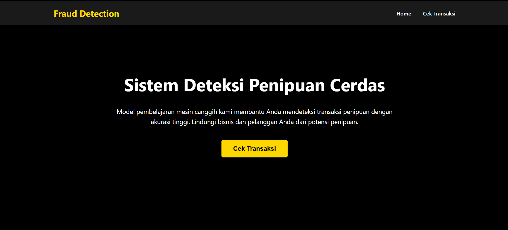
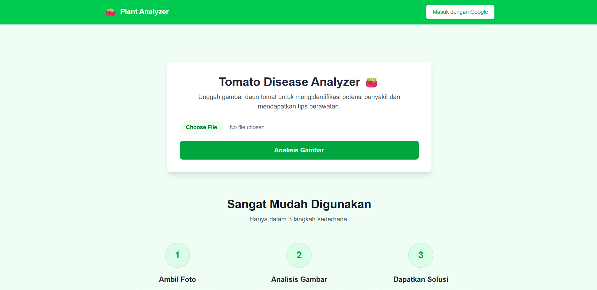
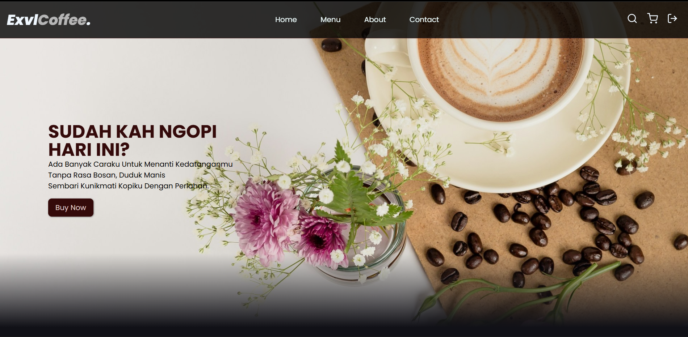

Saya membuat website, mengembangkan aplikasi, dan mencoba berbagai hal dengan & machine learning.
Fraud Detection
Proyek Skripsi (Undergraduate Thesis Project) – Sistem deteksi penipuan transaksi finansial perbankan digital end-to-end secara real-time.

- Merancang dan membangun sistem deteksi penipuan transaksi finansial perbankan digital secara mandiri dari tahap eksplorasi data hingga deployment (end-to-end).
- Membangun pipeline data otomatis dengan normalisasi mata uang (IDR ke USD), feature scaling, penanganan data imbalanced (SMOTE), dan kalibrasi threshold tuning.
- Mengimplementasikan 3 metode inferensi: formulir input transaksi tunggal, pemrosesan batch file CSV fitur PCA, dan file CSV transaksi riil.
- Merancang RESTful API menggunakan Flask serta mengonfigurasi cloud deployment pada platform Railway untuk prediksi instan.
Tomato Disease Analyzer
Final Project – AI Modeling Lead – Platform web diagnostik penyakit tanaman tomat berbasis Deep Learning Computer Vision.

- Bertanggung jawab pada perancangan dan pelatihan model Deep Learning Computer Vision menggunakan Convolutional Neural Network (CNN) untuk mengklasifikasikan 10 kondisi daun tomat.
- Melakukan image preprocessing, augmentasi data citra, serta fine-tuning model guna memaksimalkan performa dan akurasi inferensi diagnostik tanaman.
- Mengonfigurasi cloud model serving via Hugging Face Gradio Client agar estimasi inferensi penyakit dapat diakses secara asinkron oleh web platform.
- Berkolaborasi dengan tim pengembang antarmuka Next.js 15 dalam integrasi API prediksi, alur upload foto tanaman, dan visualisasi rekomendasi tindakan kuratif.
Coffee Shop Website
Final Project – Website kedai kopi interaktif dengan sistem pemesanan online & panel admin.

- Merancang dan membangun antarmuka pengguna (User Interface) yang responsif untuk pelanggan dan panel admin menggunakan HTML5, CSS3, JavaScript, dan Bootstrap 4.
- Mengembangkan fitur autentikasi interaktif dengan animasi dual-panel sliding transition serta halaman katalog kopi dengan dynamic cart counter.
- Merancang alur user experience (UX) pemesanan produk dari katalog, detail keranjang, formulir checkout dengan unggah bukti pembayaran, hingga halaman pemantauan status pesanan.
- Mengintegrasikan peta interaktif lokasi kedai menggunakan Leaflet.js & OpenStreetMap serta membangun halaman manajemen produk, pesanan, dan ulasan berbasis AdminLTE yang terhubung dengan view layer CodeIgniter 3.
Tentang saya
Saya menikmati proses belajar, mencoba, dan membangun sesuatu.
Latar belakang
Saya merupakan lulusan S1 Informatika yang tertarik pada pengembangan web, machine learning, dan desain antarmuka pengguna (UI/UX).
Selama kuliah, saya mengerjakan beberapa proyek menggunakan Next.js, TypeScript, dan Python (Flask), termasuk proyek yang melibatkan pengolahan data dan machine learning.
Cara kerja
Saya senang mempelajari hal baru, terbuka terhadap masukan, dan berusaha menyelesaikan pekerjaan dengan baik. Saya juga terbiasa mencari solusi ketika menghadapi kendala selama proses pengembangan.
Dalam mengerjakan proyek, saya pernah menggunakan React, Scikit-learn, Supabase (PostgreSQL), Tailwind CSS, dan Bootstrap.
Pengalaman
Freelance
Admin Data Entry
Agu 2026 – Okt 2026
- Mengelola dan menjaga akurasi entri data di Microsoft Excel dan Google Sheets.
- Membuat pelaporan yang mengekspor dokumen ke PDF otomatis setelah data tervalidasi.
- Menghitung persentase pengadaan harga untuk perbandingan biaya vendor.
Freelance
UI/UX Designer
Jan 2026 – Apr 2026
- Merancang wireframe, menentukan hirarki visual, tata letak antarmuka, serta skema warna sesuai kebutuhan spesifikasi klien.
- Membuat high-fidelity prototype interaktif dan mempresentasikannya kepada klien untuk tahap evaluasi dan iterasi desain.
Freelance
UI/UX Designer & FrontEnd Dev
Apr 2026 – Jun 2026
- Merancang antarmuka pengguna (UX) hingga tahap pengembangan fitur Front-End.
- Merancang komponen antarmuka visual (UI) dan mengimplementasikannya secara presisi ke dalam kode antarmuka.
- Melakukan pengujian serta debugging fungsionalitas front-end untuk memastikan antarmuka berjalan responsif dan optimal.
Pendidikan
Universitas Amikom Yogyakarta
S1 Informatika
Sep 2022 – Jul 2026
Kemampuan
Sertifikasi & Pelatihan